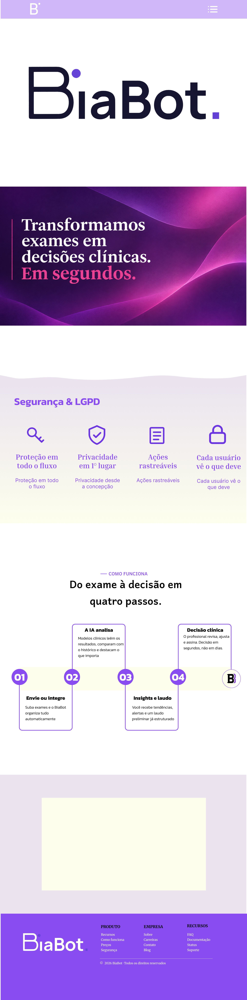
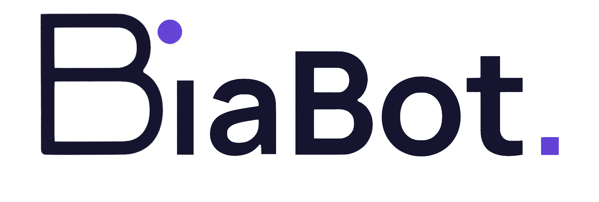

Transformamos exames em decisões clínicas. Em segundos.
Uma experiência pensada para preservar informações sensíveis ao longo de todo o fluxo.
Respeito às pessoas e aos seus dados desde a concepção de cada interação.
Contexto e visibilidade para acompanhar o caminho da informação até a revisão.
A informação certa para cada papel, mantendo o foco no que cada pessoa precisa.
Adicione os exames e reúna as informações em um só lugar. Tudo pronto para o próximo passo.
A IA relaciona resultados e histórico para destacar padrões e apoiar a análise profissional.
Tendências, pontos de atenção e uma síntese estruturada tornam a revisão mais fluida.
O profissional revisa, ajusta e decide. A tecnologia apoia; o olhar clínico conduz.
confiado por clínicas de saúde
Clínicas fictícias para demonstração.

Uma nova perspectiva.